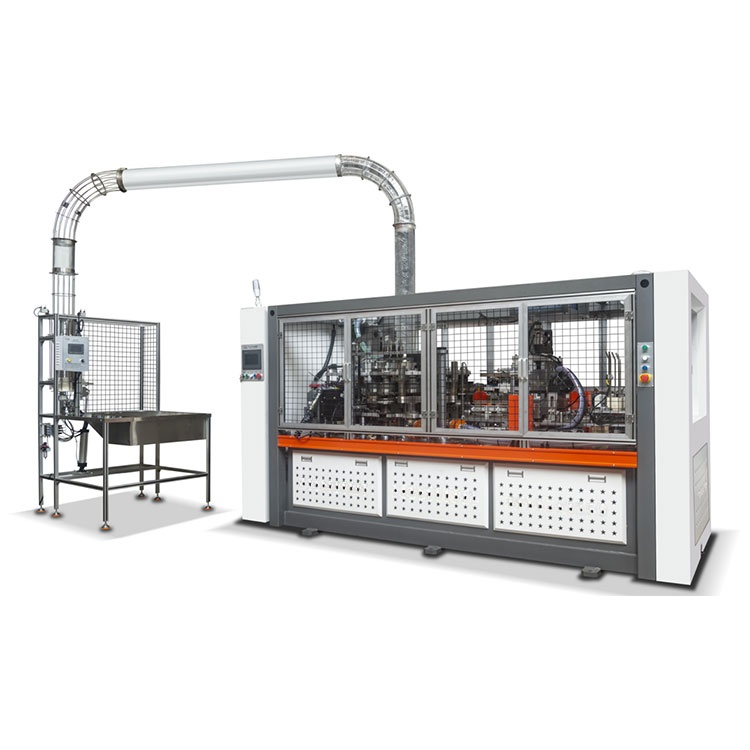

The Automatic Salad Bowl Machine from China’s leading supplier automates the entire salad bowl production process:
●Fully Automated: Handles all production steps with minimal manual input.
●Efficient: Increases production speed and consistency.
●Durable: Designed for reliable, long-term use.


